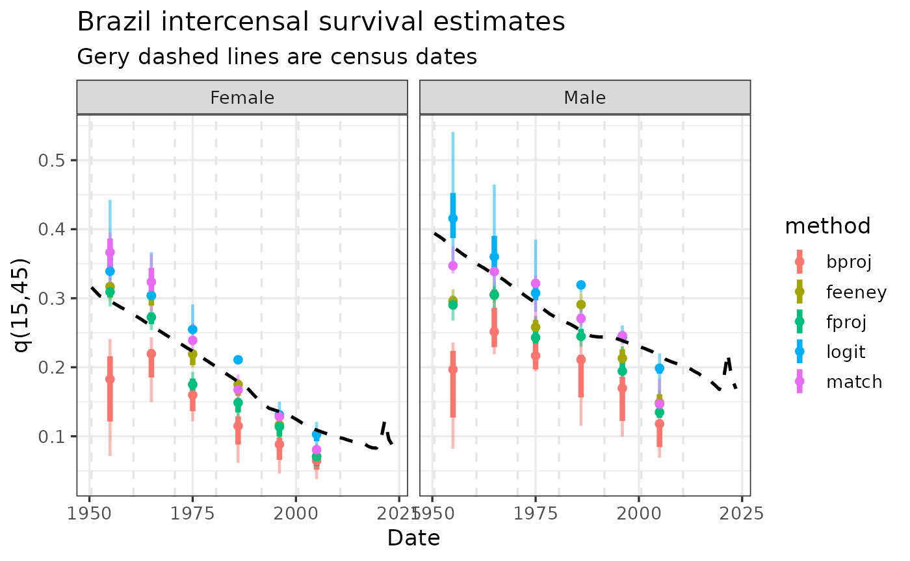

Intercensal survival method for adult mortality: an application to Brazil
IntercensalSurvival.RmdIntroduction
Intercensal survival methods are based on relating the size of cohorts between two consecutive census dates, drawing on the population balancing equation for closed populations (Hill 2001; Preston et al. 2001). The main source of information is the population distribution by sex and age group from two successive censuses, generally conducted 5 or 10 years apart (Arriaga 1994; Hill 2001). These methods are essential for producing estimates of adult mortality in contexts where vital registration systems are nonexistent or have insufficient coverage (Hill 2001; Moultrie et al. 2013). They also serve as diagnostic tools for assessing the consistency of demographic data and detecting anomalies in the age structure of the population (Hill 2001; Moultrie et al. 2013).
The intercensal relationship between cohorts, assuming that the first census was conducted at () and the second at (), is:
The main methodological variants include:
-
Model-pattern fitting (match): this method is based on selecting a model life table family and identifying the level that provides the best fit for each () corresponding to each age group. The indicators of interest are then obtained from the resulting life table—in our case, ()—and a summary measure is calculated across all cohorts.
This is considered the most rudimentary method and was originally recommended in Manual X (United Nations Population Division 1983). A later refinement presented by Preston (1983b) applies the Brass logit transformation, using the selected model family as the standard and the resulting level obtained from the fitting method as the reference (Preston et al. 2001).
Forward and backward projection (fproj and bproj): these methods start from the first—or the last—census and use a model family to project the population forward—or backward—in order to determine the mortality level required to reproduce the age structure of the second—or first—census. The literature indicates that differences between the two approaches will always exist, regardless of the errors present. Nevertheless, “backward projections provide a less biased estimate of the correct mortality level, provided that there are no age-reporting errors and that enumeration completeness differs between the two censuses” (Palloni and Kominski 1984). In general, it is recommended that the method be applied in both directions and that a way of combining the results be sought, taking into account the particular characteristics of the population under study (United Nations Population Division 1983).
Variable-(r) (var-r): the population by age and sex can be expressed as a function of survival ratios and cohort growth rates, a relationship derived by relaxing the stable-population assumption of a single growth rate originating from births (Bennett and Horiuchi 1981). Given the size of each cohort at two different points in time and the average annual growth rate by age, it is possible to infer the implicit survival ratio for each age group (Preston and Bennett 1983a). The main advantage of this method is that the width of the age groups does not need to coincide with the length of the intercensal period.
Feeney method (feeney): the central idea of Feeney’s method (United Nations Population Division 2002) is to convert survival ratios into probabilities “rooted” at age 2.5. The procedure has different versions depending on the length of the intercensal interval—5 years, 10 years, or any other number of years.
The main limitation of these methods is their high sensitivity to changes in census coverage completeness between one census and the next. If the second census is more complete than the first, mortality will appear artificially low (Hill 2001; Moultrie et al. 2013). In addition, because the methods assume a closed population, unrecorded international migration biases the estimated number of deaths (Hill 2001; Preston et al. 2001). These situations produce cohort ratios greater than one, which must be excluded as inputs to the methods, at least in those methods that cannot be modified to incorporate migration. Finally, age exaggeration among older adults and age misreporting generally produce inconsistent or physically impossible survival ratios, such as values greater than one (Hill 2001; Preston et al. 2001).
For step-by-step descriptions of the procedures, see Chapter XIV of Manual X (United Nations Population Division 1983) or Chapter 9 of Preston, Heuveline, and Guillot (2001).
Input data
Data that we need (both loaded with the package):
- Census population by five age-groups and sex in consecutive census
library(dplyr)
#>
#> Attaching package: 'dplyr'
#> The following objects are masked from 'package:stats':
#>
#> filter, lag
#> The following objects are masked from 'package:base':
#>
#> intersect, setdiff, setequal, union
library(tidyr)
library(ggplot2)
loc_name <- "Brazil"
census_data <- all_censuses |>
filter(LocName == loc_name, SexName %in% c("Female", "Male")) |>
arrange(SexName, TimeMid, AgeStart) |>
select(LocName, IndicatorName, StatisticalConceptName, DataProcessType,
TimeLabel, TimeMid, SexName, AgeStart, AgeSpan, DataValue)- Life table information about infant/child mortality and (some methods requiere additional information)
head(lt5_wpp24_brazil, 2)
#> SortOrder LocID Notes ISO3_code ISO2_code SDMX_code LocTypeID LocTypeName
#> <int> <int> <char> <char> <char> <int> <int> <char>
#> 1: 281 76 BRA BR 76 4 Country/Area
#> 2: 281 76 BRA BR 76 4 Country/Area
#> ParentID Location VarID Variant Time MidPeriod SexID Sex AgeGrp
#> <int> <char> <int> <char> <int> <num> <int> <char> <char>
#> 1: 931 Brazil 2 Medium 1950 1950.5 1 Male 0
#> 2: 931 Brazil 2 Medium 1950 1950.5 1 Male 1-4
#> AgeGrpStart AgeGrpSpan mx qx px lx dx
#> <int> <int> <num> <num> <num> <num> <num>
#> 1: 0 1 0.19185271 0.16911369 0.8308863 100000.00 16911.369
#> 2: 1 4 0.01895013 0.07230831 0.9276917 83088.63 6007.998
#> Lx Sx Tx ex ax
#> <num> <num> <num> <num> <num>
#> 1: 88147.67 0.8103805 4636940 46.3694 0.299150
#> 2: 317042.58 0.9409529 4548793 54.7463 1.451407Application
First we need to organize the pair-census comparison.
census_pairs <- tibble(
date1 = head(sort(unique(census_data$TimeMid)), -1),
date2 = tail(sort(unique(census_data$TimeMid)), -1)) |>
mutate(t_middle = trunc((date1 + date2) / 2))The for each one we will apply the different methods included in the
intercensal_survival function, with ages of fit for each
one (deafult based in literature, but can be also an additional
combinatoric variable) and all the eleven model life table families as
pattern (see DemoToolsData::modelLTx1).
# combination of possible methods and census pairs
grid <- crossing(
census_pairs,
sex_name = c("Female", "Male"),
tibble(
method = c("match", "bproj", "fproj", "var-r", "feeney", "logit"),
li = c(15, 0, 0, 10, 5, 0),
ui = c(60, 40, 40, 30, 30, 60)
)
)We loop over the combinations of sex/interval/method/mlt with
pmap from the map family functions (if we set
mlt_family = NULL then results for all the models are
returned). If you want to see in detail the application to some census
pair (not looping in an industrial scale as here) see the
intercensal_survival documentation.
library(purrr)
runs <- pmap(grid, \(date1, date2, t_middle, sex_name, method, li, ui) {
tryCatch({
# get census data for the combination
census_pair <- census_data |>
filter(SexName == sex_name, TimeMid %in% c(date1, date2)) |>
arrange(TimeMid, AgeStart)
# get life table data for the combination
lt_input <- lt5_wpp24_brazil |>
filter(Sex == sex_name, Time == t_middle, AgeGrpStart %in% c(0, 1, 5)) |>
arrange(AgeGrpStart)
# apply methods
out <- intercensal_survival(
c1 = census_pair$DataValue[census_pair$TimeMid == date1],
c2 = census_pair$DataValue[census_pair$TimeMid == date2],
date1 = date1,
date2 = date2,
age1 = census_pair$AgeStart[census_pair$TimeMid == date1],
age2 = census_pair$AgeStart[census_pair$TimeMid == date2],
sex = if_else(sex_name == "Female", "f", "m"),
mlt_family = NULL,
method = method,
ages_fit = seq(li, ui, 5),
mlt_e0_logit_feeney = lt_input$ex[lt_input$AgeGrpStart == 0],
q01_q05 = 1 - lt_input$lx[lt_input$AgeGrpStart %in% c(1, 5)] / 1e5,
verbose = FALSE
)
# return
list(
result = out$selected_level |>
left_join(out$Adult, by = "type") |>
mutate(loc_name, sex_name, method, date1, date2, t_middle, .before = 1),
error = NA_character_
)
}, error = \(e) list(result = NULL, error = conditionMessage(e)))
})
#> Warning in lt_rule_m_extrapolate(x = Age, mx = nMx, x_fit = extrapFit, x_extr = x_extr, : Extrapolation failed to converge
#> Falling back to Gompertz with starting parameters:
#> parS = c(A = 0.005, B = 0.13))Results
First we can take a look to combinations that did not work, and if we see something we need to loof for the reason (can exists quality problems in census data, or some issue arrangin the data, etc.). In ths case we are safe.
issues_df <- grid |>
mutate(error = map_chr(runs, "error")) |>
filter(!is.na(error))
head(issues_df, 2)
#> # A tibble: 2 × 8
#> date1 date2 t_middle sex_name method li ui error
#> <dbl> <dbl> <dbl> <chr> <chr> <dbl> <dbl> <chr>
#> 1 1950. 1961. 1955 Female var-r 10 30 [ was called on a data.table…
#> 2 1950. 1961. 1955 Male var-r 10 30 [ was called on a data.table…There are many ways to get summary information from the results. We choose here to get min/max and inter-quartil percentiles for each sex, method and census-pair.
results_df <- map2_dfr(runs, seq_len(nrow(grid)), \(x, i) {
if (is.null(x$result)) return(NULL)
x$result |> mutate(run_id = i, .before = 1)
})
dispersion_df <- results_df |>
summarise(
q15_45_min = min(q15_45, na.rm = TRUE),
q15_45_p25 = quantile(q15_45, 0.25, na.rm = TRUE),
q15_45_med = median(q15_45, na.rm = TRUE),
q15_45_p75 = quantile(q15_45, 0.75, na.rm = TRUE),
q15_45_max = max(q15_45, na.rm = TRUE),
.by = c(sex_name, method, t_middle)
)We plot the results agaist WPP24 results (which in some way already
is considering the estimates). The match method yields
higher adult mortality in all periods and for both sexes, while
fproj looks always too lower, and the estimates produced by
the other four methods are fairly similar. If the estimates from WPP
2024 are incorporated into the analysis, the mortality level estimated
for 2000–2010 appears to be too low. Besides that, looks intercensal
estimates can inform about general tendency between 1950-2010.
Comparison with other estimates, regions, or countries is therefore
particularly useful for calibrating the final adjustment.
wpp_q15_45_df <- lt5_wpp24_brazil |>
summarise(q15_45_wpp = 1 - lx[AgeGrpStart == 60] / lx[AgeGrpStart == 15],
.by = c(Sex, Time))
ggplot(dispersion_df, aes(t_middle, q15_45_med, color = method)) +
geom_linerange(aes(ymin = q15_45_min, ymax = q15_45_max), alpha = 0.5, linewidth = 0.8) +
geom_linerange(aes(ymin = q15_45_p25, ymax = q15_45_p75), linewidth = 1.5) +
geom_vline(xintercept = unique(census_data$TimeMid), col = "grey90", linetype = 2) +
geom_point(size = 1.8) +
geom_line(
data = wpp_q15_45_df |> mutate(t_middle = Time + .5, sex_name = Sex),
aes(x = t_middle, y = q15_45_wpp),
color = "black",
linewidth = 0.9,
linetype = "dashed") +
facet_wrap(~ sex_name) +
labs(x = "Date", y = "q(15,45)", title = "Brazil intercensal survival estimates", subtitle = "Gery dashed lines are census dates") +
theme_bw(base_size = 13) +
theme(panel.grid.minor.x = element_blank())